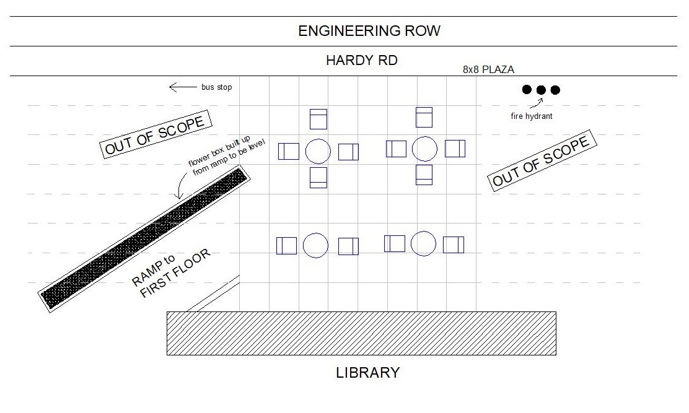
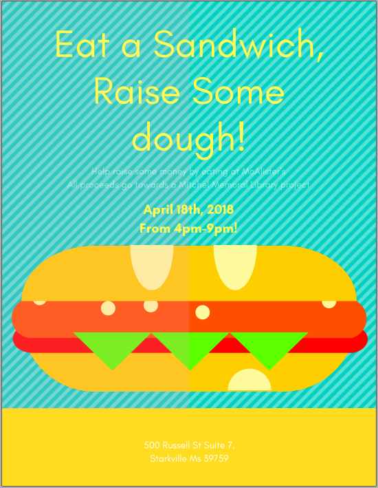

Michael Poole
Home
About Me
Resume
Capstone
Contact
Montgomery Leadership Program Capstone Project:
Montgomery Leadership Program is a three semester fellowship program at Mississippi State University that is committed to promoting the values of leadership and service. Throughout the duration of the program, I have learned more about myself as a leader, my strengths and weaknesses, and how I can best go about making a difference in my community.
In the third semester of this program, each fellow is tasked with brainstorming and implementing a Capstone Project. For my Capstone project, I wanted to focus on giving back to the university that had given so much to me. My plan was to make a new outdoor seating area for students and visitors alike behind our library. In order to accomplish this, I needed both the permission to do this, and a way to raise funds for the tables and chairs.

When it came to permissions, we needed both the approval of the library and the university's planning oommittee. Starting off, the general idea was to provide seatingnd scenery for a newly constructed plaza area behind the library. I quickly learned that this general idea would not be enough to convince the staff in these oversight positions, and that I would need something more concrete. In order to accomplish this goal, I worked with other classmates to take an overhead shot of the area with a drone and work up a rough blueprint of what we wanted with CAD software. Having both evidence of the idea and of a solid work ethic eventually got the project approved by the required parties.
Once the project was approved, the focus shifted to fundraising at full force. I began collaboration with multiple restaurants such as Panda Express and McAlister's Deli to host fundraising nights at their restaurants. To raise funds at McAlister's, I had to recruit classmates to help work at the restaurant at various time shifts between 4 and 9 PM. For Panda Express, the focus fell primarily on advertisement, as the customer had to present a voucher for the funds to go the project. These two opportunities presented unique challenges, and I learned a lot from both. Unfortunately, these did not raise enough money for the project as a whole. In order to compensate for this, I have decided to work to give the project legs of its own to move forward and continue raising funds on. This is currently taking the form of partnering with MSU Foundations to highliht the project to alumni as an opportunity to donate and give back to their past campus. This portion of the project is still in progress.

I have learned a lot from my Capstone project throughout this semester. In order to accomplish important things, you have to be ahead of the game and invested in the entire process. If I had not been prepared when talking to the library staff, it is likely that this project would have never started. If I had not advertised and reached out to get the community involved in the process, the fundraising nights would not have been effective, and we wouldn't have been able to contribute anything to the project. I learned many lessons about communication and persistence in this field, as everyone is busy and in you have to show people you are willing to work for them if you are going to receive any of their valuable time. Overall, this has been a great experience, and one that I hope to see fruit from soon.